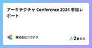
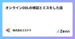
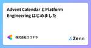
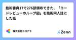

株式会社ココナラさんのフィード
https://zenn.dev/coconala
株式会社ココナラのテックブログ用アカウントです。 ココナラに所属するエンジニアが多様な記事を執筆して公開していきます。 採用情報はこちら → https://coconala.co.jp/recruit/engineer ココナラWebサイト→ https://coconala
フィード

AIスタジオのご紹介とストリーミング生成のポイント
株式会社ココナラさんのフィード
本記事は株式会社ココナラ Advent Calendar 2024 7日目の記事です。 はじめにこんにちは。株式会社ココナラの データテクノロジー室に所属しているエンジニアの DO です。二児のパパをしています。かわいい笑顔に毎日癒されています（ただのノロケです 笑）ChatGPTの登場以降、ビジネスシーンでのAI活用が急速に広がっています。しかし、多くのビジネスパーソンが「AIをどのように業務に活用すればよいのかわからない」「適切な指示を出すのが難しい」といった課題を抱えているのが現状です。このような課題を解決するため、弊社は2024年11月18日に新サービス『ココ...
1日前

クエリ一つでGeminiマルチモーダルテキスト生成
株式会社ココナラさんのフィード
本記事は株式会社ココナラ Advent Calendar 2024 8日目の記事です。 はじめにこんにちは。株式会社ココナラ データテクノロジー室所属のエンジニア、 Unseo と申します。趣味はミーアキャット観察です。みなさん、Gemini [1]のマルチモーダル機能、使ってますか？すごい可能性を秘めているのですが、導入ってちょっと大変ですよね。API 叩いたり、環境構築したり…。そこで今回は、BigQuery ML（BQML）[2]と オブジェクトテーブル[3]を組み合わせて、たった一つのクエリで Gemini のマルチモーダルテキスト生成を実現する方法を紹介しま...
2日前

初めてのRailsバージョンアップ経験の振り返りをしてみる 1
1
株式会社ココナラさんのフィード
本記事は株式会社ココナラ Advent Calendar 2024 6日目の記事になります。こんにちは。株式会社ココナラ バックエンド開発チームのtoruchanと申します皆様はシステムのバージョンアップ対応を経験したことはありますか？自分は今年初めてRailsバージョンアップ対応の経験をしました。本記事では自分が担当したRailsバージョンアップ対応についての振り返りを行っていこうと思います。 バージョンの差分についてバージョンアップ前後のRuby/Railsのバージョンの差分は下記の通りです。Rubyは2系から3系、Railsは5系から7系への変更を行いました。...
3日前

GitHub Appのインストールアクセストークンを試してみる
株式会社ココナラさんのフィード
こんにちは。株式会社ココナラのシステムプラットフォーム部インフラ・SREチームのかとりょーと申します。この記事ではGitHubのアクセストークンに触れつつ、実際にGitHub Appのインストールアクセストークンを利用してリポジトリをcloneする流れを紹介します。 経緯弊社ではCI/CDのツールの一つとしてCircleCIを利用しています。CIの中で他のリポジトリと連携を行うことがあるのですが、外部サービスなのでGitHubとの認証が必要になります。GitHubの認証にはいくつか方法がありますが、GitHub Appのインストールトークンに触れておもしろかったのでこの記事...
4日前

開発統括として一年の振り返りとこれから
株式会社ココナラさんのフィード
本記事は株式会社ココナラ Advent Calendar 2024 5日目の記事です。こんにちは！最近はロマサガ2、ドラクエ3と、世代どハマリのリメイク2作品に感動しているせっきー（関川）（@k_s_eng）です。今回は、一年の節目ということでココナラスキルマーケットの開発統括としてやってきたことを振り返りつつ、2025年に進めたいと考えていることをまとめていきます。今も試行錯誤をしながらプロジェクトマネジメントをしていますが、共感、疑問、成功体験など反応いただけると幸いです。 開発統括としてのミッションココナラ スキルマーケットの開発統括として、中規模以上の施策について...
4日前

2024年の技術広報取り組み成果発表！ 3
株式会社ココナラさんのフィード
こんにちは！株式会社ココナラのHead of Informationの ゆーた（@yuta_k0911）です。技術広報 Advent Calendar 2024 シリーズ1 4日目の記事です。また、株式会社ココナラ Advent Calendar 2024 4日目の記事も兼ねています！良かったら弊社のアドベントカレンダーもご覧ください。ココナラでは2022年から本格的に技術広報活動に取り組み始めました。2024年の振り返りとして、本記事を書きます。 2023年の技術広報活動まずは技術広報活動を始める前（だいたい2021年ごろ）の状況をご紹介します。一言でいうと、何...
5日前

アーキテクチャ Conference 2024 参加レポート
株式会社ココナラさんのフィード
こんにちは。株式会社ココナラのアプリ開発グループ、インフラ・SRE チームのクララとココナラ募集部 開発チームのカヤです！今回は 11/26(火) に開発された「アーキテクチャ Conference 2024」に参加してきたので、レポートします。 アーキテクチャ Conference 2024 とは本カンファレンスでは、ご登壇者の方々に今一度システムの基盤となるアーキテクチャの思考法や手法といった全体像から、他社が実践した具体的な構築事例といった部分像までをお話しいただくことで、アーキテクチャに対する考え方を学び直し、発想を広げられることを目指しています。(公式ページから...
6日前

オンラインDDLの検証とミスをした話 1
株式会社ココナラさんのフィード
本記事は株式会社ココナラ Advent Calendar 2024 3日目の記事です。株式会社ココナラマーケットプレイス開発部でバックエンドチームのチームマネージャーをしているぴろと申します。今回は、MySQL8.0系でオンラインDDLの検証を行った話を書きます。 何故その検証が必要だったかココナラでは日々、機能の開発や改修が動いていて、その中にはデータベースに大きな変更を入れたいケースがあります。データベースに大きな変更を入れる際に大きな負荷を掛けすぎてしまうと、データベースにアクセスしにくくなったり、SQLの結果を返すのが遅くなったりしてしまいます。そこで、MySQL8...
6日前

Advent Calendar とPlatform Engineering はじめました 1
株式会社ココナラさんのフィード
はじめに本記事は株式会社ココナラ Advent Calendar 2024 1日目の記事です。今この記事を読んでくださっている皆さま、はじめまして！VP of Platform Engineering の@nu2 です。私達は株式会社ココナラのソフトウェアエンジニアです。 ココナラとはhttps://coconala.com/pages/about!ココナラは、ビジネスからプライベート利用まで、個人のスキルを気軽に売り買いできる日本最大級のスキルマーケットです。スキルマーケットを祖業としながら現在”第二創業期”と銘打ち、コンパウンド(スタートアップ）[1]戦略を...
6日前

技術書典17で276部頒布できた、「コードレビューのループ図」を技術同人誌にした話 1
株式会社ココナラさんのフィード
本記事は株式会社ココナラ Advent Calendar 2024 2日目の記事です。こんにちは。株式会社ココナラでバックエンド開発に従事するかわむーと申します。私は趣味で技術同人誌を執筆しており、技術書典や技術書同人誌博覧会などの技術同人誌イベントへサークル参加しています。直近でも2024年11月2日から11月17日まで開催されていた「技術書典17」にサークル参加しました。そこで、「鍛錬するとコードレビューがループする 〜へーしゃの技術戦略室室長が語ったコードレビューの在り方〜」（以降、「コードレビューループ本」と記載）という本を頒布していました。最終的な頒布部数は、オフラ...
7日前

その技術選定、本当に「選んだ」ものですか？
株式会社ココナラさんのフィード
こんにちは。ココナラ募集部 開発チームのかもと申します。先日チームメンバーより、リリースされたばかりのココナラ募集が全く違うアーキテクチャによりリプレイスされる予定、という記事が公開されました。今回はこのリプレイスの過程で発生した、技術選定の悲喜こもごもをお送りします。 リプレイスという決断ココナラは今年で運営開始してから12年を迎えます。栄枯盛衰が激しいウェブ業界で、これだけ長く続けられているのは、利用してくださっているユーザーの皆さまのお力によるものに他なりません。今後も引き続きご贔屓に……と申し上げるべきところですが、ここは技術ブログ。そのサービスの裏側のお話です。さて...
11日前
CodeDeployを利用したときの連続デプロイには罠がある
株式会社ココナラさんのフィード
はじめにこんにちは。株式会社ココナラ（以降、弊社と表記）のインフラ・SRE チームのR.Y.です。今回はAWS CodeDeploy、AutoScalingグループによるEC2インスタンスを増やそうとした時にハマったことについて語りたいと思います。 出題編 システム構成とデプロイワークフローエラーの原因を特定する前に、まず弊社の一部のシステム構成とデプロイワークフローを紹介させてください。デプロイツールのCircleCIを運用しており、Githubへのコード更新をデプロイのトリガーとします。スクリプトdeploy.shでソースコードをAWSにアップロードして、...
11日前
FY2025上期エンジニアオフサイトDay1
株式会社ココナラさんのフィード
こんにちは！株式会社ココナラ マーケットプレイス開発部 Web開発グループ バックエンド開発チームのからあげくんです。今回のブログでは、10月に開催したFY2025上期のエンジニアオフサイトをレポートします！ オフサイトって？ココナラでは、世間一般で呼ばれるオフサイトミーティングを略してオフサイトと呼んでいます。オフサイト（off-site）とは、英語で「離れた場所」を意味する言葉です。通常、オフィスの会議室など職場で行う会議やミーティングを「オンサイトミーティング（on-site meeting）」と呼ぶのに対して、社外の会議室など職場を離れた場所や環境で行うミーティン...
19日前
Kaigi on Rails 2024 にブース出展しました！
株式会社ココナラさんのフィード
こんにちは！株式会社ココナラで、バックエンドエンジニアをしているちっぴーと申します。ココナラは、2024年10月25日（金）と26日（土）に開催された「Kaigi on Rails 2024」に、Gold Sponsorsとして協賛、およびブースの出展をさせていただきました。「Kaigi on Rails」は「初学者から上級者までが楽しめるWeb系の技術カンファレンス」です。ココナラからは2日間でVPoEを含む6名のエンジニアが参加しました。本記事では、「Kaigi on Rails」に参加して得られた学びや感想について書いていきたいと思います。 出展準備ココナラが「K...
1ヶ月前
Rubyではじめる関数型ドメインモデリング
株式会社ココナラさんのフィード
こんにちは。世界から法律に関わる悩みをなくしたい高崎です。普段はココナラ法律相談という弁護士の先生方と相談したい悩みのある相談者のマッチングサービスをつくっています。https://legal.coconala.com/ココナラ法律相談はもうすぐリリース10年を迎える、それなりに歴史があるRuby on Rails（以後Rails）で実装されたWebサービスです。Railsは非常に洗練されたフレームワークで、迅速に機能を実装可能ですが、その反面自由度が高いがゆえに意図せず技術的負債を生み出しやすい傾向にあります。この記事では、関数型ドメインモデリングという考え方を参考に、どのように...
1ヶ月前
Kaigi on Rails 2024 にブース出展します！
株式会社ココナラさんのフィード
皆さんこんにちは！バックエンド開発グループの唐揚げ君です。ココナラは、2024年10月の25日(金)と26日(土)に有明セントラルタワーホール & カンファレンスで開催される「Kaigi on Rails 2024」に、Gold Sponsorsとして協賛することになりました！また、両日ともにブース出展を行なっているので、このブログを読んでくれた方が来場してくれるのを楽しみにしております！ そもそもKaigi on Railsって？Kaigi on Railsとは、Ruby on Railsをテーマにした技術カンファレンスです。初学者から上級者までの幅広い層に向けて...
2ヶ月前
ライブラリのバージョン管理ツールDependabotを導入しました
株式会社ココナラさんのフィード
はじめにこんにちは。株式会社ココナラアプリ開発グループ、iOSチームのじょにーです！今回はiOSチームで最近導入したDependabotについて概要から設定方法、どのように運用しているかまでお話ししていきます。 Dependabotとは？Dependabotはリポジトリ内の依存関係をチェックし、必要に応じてパッケージバージョンの脆弱性をメールなどで通知したり、バージョン更新用のPull Requestを任意のタイミングで自動的に発行してくれるなどの役割を担っています。元々は独立したサービスでしたが、2019年にGitHubが買収し、現在はGitHubがホストしているbot...
2ヶ月前
フロントエンドのテスト戦略ってどうすればいいの？
株式会社ココナラさんのフィード
こんにちは！株式会社ココナラの法律相談事業部でWebエンジニアをしている 原井夏樹 です。ココナラ法律相談というプロダクトのフロントエンド・バックエンド開発を担当しています。よければXのフォローをお願いします！喜びます！ @superhahnahこの記事ではフロントエンドテストの導入にあたり、私たちのプロダクトではどんなテスト戦略をとるべきかを調査・検討して得られた知見を共有します。読んでくださる皆さんの参考になれば幸いです。 そもそもフロントエンドのテストって色々ありすぎてよくわからん「〇〇テスト」っていう用語、本当にたくさんありますよね。 例えば…ユニットテスト(...
2ヶ月前
【Flutter】国会図書館のAPIで国会議事録アプリを作った話
株式会社ココナラさんのフィード
こんにちは。株式会社ココナラ Web開発グループ フロントエンド開発チームの加藤です。普段はWebのフロントエンドの開発をしていますが、最近プライベートでFlutterの勉強も兼ね、アプリの個人開発をしました。Flutterの開発言語のDartはJavaScriptに似ているため、フロントエンドエンジニアでも馴染みやすいと思います。今回はそこで使ったAPIやパッケージの紹介・解説をします。 作ったものチャットアプリのようなUIで気軽に国会の発言を見ることができるアプリです。議員をフォローしてその議員の全発言を見たり、ワードをフォローしてそのワードが含まれる発言を抽出したり...
2ヶ月前
ココナラ募集をリリースするまで
株式会社ココナラさんのフィード
こんにちは。ココナラ募集部 開発チームのかやです。今回は、まだリリースされて間もないココナラ募集のリリースまでの経緯や工夫したことをお伝えしたいと思います。 どんな体制で開発をしたか？事の始まりは2023年。ココナラの新しい機能として「ココナラ募集」の企画が立案され、各部署からメンバーが集められました。これまでココナラではサーバーサイド、フロントエンド、ネイティブアプリ等といった各分野の専門スキルを持ったメンバーが集まり、コミュニケーションを取って機能開発する事が多かったのですが、今回は少ないメンバーで多くの機能を開発する必要がありました。それぞれのメンバーが専任スキルを持って...
2ヶ月前